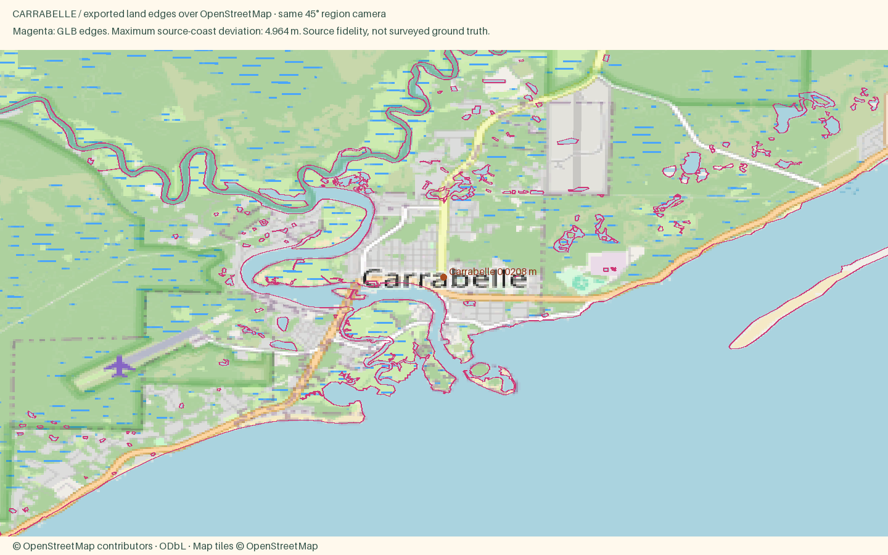

Carrabelle
Open atlas · Accuracy CSV · Sourced medians
Region
Carrabelle
Open districtA small fishing town on the Forgotten Coast with a working harbor and a slow, friendly pace.
Source alignment

Manual fixes
- Town-specific package using the shared locked pipeline; facade colors are editorial interpretations, not a surveyed color inventory.
- Existing Census land context continues beyond the OSM data rectangle, avoiding artificial water edges at the package boundary.